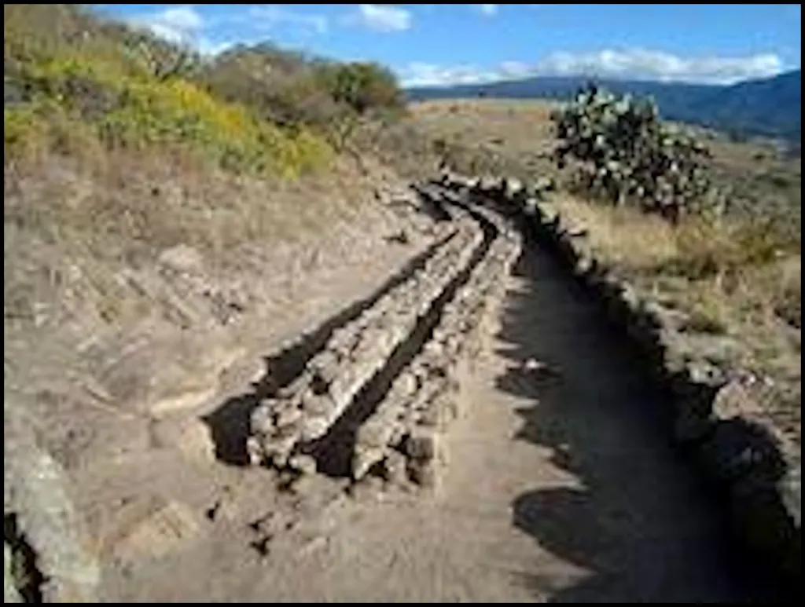

Photo credit: https://www.mayaincaaztec.com/aztec/aztecagriculture
The Aztecs utilized past achievements of earlier Mesoamerican cultures to further develop and expand their Empire in terms of agriculture. Within their city, Tenochtitlan, 200,000 people inhabit the area and the need for food and fresh water over a lake is essential. They can’t drink the water of Texcoco Lake because it’s salty and had to resort to using King Nezahualcoyotl’s water system. Nezahualcoyotl is an ally of the Aztecs, and his water system is a aqueduct that connects to nearby mountains with springs and transports the water from the springs. There are pools built that regulate the water flow to discourage bacteria from settling on the surface. It was a 5 mile long aqueduct that’s 200 feet above the valley floor (The Lost Pyramids).
By using King Nezahualcoyotl’s idea of a water system, they used the same idea to transport the fresh water from the mountains to the center of the Empire. They used a mat as the starting base on the lake’s surface, loaded it with mud, soil and rocks on top before adding the water channel.
For crops, they had a unique agricultural technique to grow their crops over Texcoco Lake. It was a technique called chinampa agriculture. It was plots of soil in the lake that are held together with organic material they gathered, it’s like floating mini islands for their crops. They produced crop of maize, beans, amaranth, chia, chilies, tomatoes, and fruit. In the documentary called the Lost Pyramids of the Aztecs, they specifically showed how the Aztecs were able to create these plots. They used four sticks or branches, sticking them into the water and made sure they held firm before binding these pillars with reeds and more branches. They filled the center with grass and mud which would bind the entire structure together to create the chinampa.